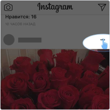

Русский
Русский
Анонимный просмотр историй в инстаграм онлайн
Смотри без регистрации и входа в instagram
Только для публичных профилей
Возможные форматы
- username
- @username
- https://www.instagram.com/username/
Как скачать фото или видео из Инстаграм за 3 шага?
- Введите ссылку выше
- Нажмите "Скачать ".
- Перейдети на страницу со ссылкой на скачивание
Характеристики сервиса:
- Скачивание фото
- Cкачивание видео из instagram
- Статистика работы: всего скачано 8809047 фото и видео
На нашем сайте Вы легко сможете скачать и сохранить фото или видео из Инстаграма онлайн без регистрации и авторизации не используя программы и приложения! Разработчики Instagram постарались исключить любую возможность скопировать изображения: в обычном браузере это нельзя сделать через правую клавишу мыши и функцию «Сохранить картинку как…», не говоря уже о приложении – там нет такого функционала.
Но здесь Вы можете это сделать…
Как скачать фото и видео из Инстаграма на компьютер
Если Вы используете браузер на компьютере или ноутбуке, то выполните следующие шаги. Разберем на примере Google Chrome.
1. Если Вы находитесь в своей ленте, то следует нажать на дату публикации фото/видеоролика – это ссылка на отдельную страницу с изображением/роликом.
2. Если Вы в аккаунте пользователя, то просто нажмите на нужную картинку.
3. Когда откроется новое окно, выделите и скопируйте адрес страницы из адресной строки: сочетанием клавиш «Ctrl+C» или правый клик мыши через пункт «Копировать».
4. На этом сайте ИнстаГраббер вставьте полученную ссылку в соответствующее поле и нажмите клавишу Enter или кнопку «Скачать» 
5. Теперь остается только нажать на изображение или кнопку «Скачать фото (видео)», и файл автоматически сохранится в папке «Загрузки».
6. В современных браузерах файл должен скачаться автоматически. Если этого не произошло, то он просто откроется в новой вкладке (окне). В этом случае загрузить его можно через правую кнопку мыши и пункт «Сохранить картинку как…».
Скачать видео с Инстаграмма на компьютер можно таким же способом, как описано выше. Если скачивание не произошло автоматически, загрузить ролик можно правой клавишей мыши через пункт «Сохранить видео как…».
Как сохранить фото или видео из Инстаграм на телефон
Если на компьютере оригинал фотки Instagram можно скачать несколькими способами (включая просмотр исходного кода страницы или вытащить его используя расширения для браузеров), то с телефоном все сложнее. Но и тут поможет наш сервис ИнстаГраббер! Объясним на примере «родного» iOS-приложения Инста на iPhone (хотя неважно, это телефон на Android или Айфон).
1. В своей ленте подписок достаточно тапнуть на « ...» рядом с ником пользователя…
2. И выбрать «Копировать ссылку».
3. Или в аккаунте пользователя тапом выбрать нужную картинку…
4. И так же через кнопку « » выбрать «Копировать ссылку».
5. Далее переходите из Инстаграмма в любой браузер (Хром, Safari или любой другой на Вашем телефоне) и этом сайте ИнстаГраббер вставляете скопированную ссылку в нужное поле и тапом нажимаете «Скачать»
6. После обновления страницы нажимаете на фото или специальную кнопку – файл откроется в новой вкладке.

7. Нажмите и удерживайте палец на картинке (событие «тач-энд-холд») пока не появится меню управления фото. Выберите «Сохранить изображение».
После сохранения фотографии на компьютер или телефон можно будет ее посмотреть, распечатать или скинуть другу.
Что умеет ИнстаГраббер
• Просмотр фото и видео из своего или чужого Instagram по ссылке бесплатно.
• Вывод полной информации о файле: автор (ник) со ссылкой на Инста, количество лайков, комментариев, просмотров видео, описание с отображением
эмоджи и дату публикации.
• Скачивание и сохранение фотографий в HD формате (большие фото) на компьютер или телефон онлайн!
• Скачивание любых (или всех) фото/видео из «карусели» (или «слайдшоу» – пост с несколькими
фотографиями и роликами).
• Удобный интерфейс работы как с компьютера, так и с телефона.
Ссылки на главную фотографию поста в виде ASCII-арта в черно-белом и цветом варианте.
Внимание: этот сайт не имеет непосредственного отношения к сервису Instagram, тут не размещено ни одной фотографии или ролика (эти файлы хранятся на серверах Инстаграм). Все права на фото- и видео-материалы принадлежат их владельцам, использовать их нельзя.